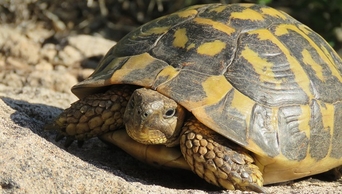
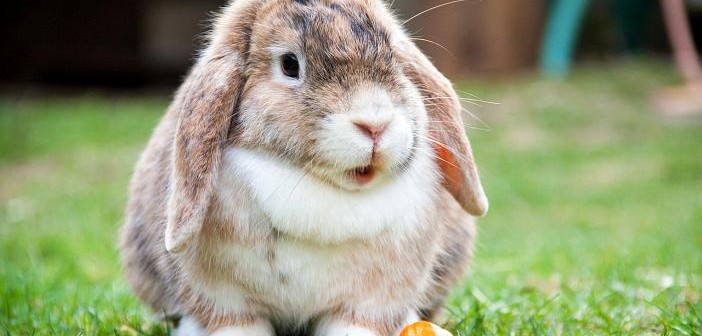
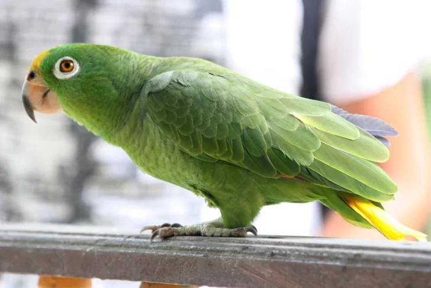

UNA MASCOTA , TU MEJOR AMIGO

LOS MEJORES AMIGOS NO SE COMPRAN ! MEJOR ADOPTA !
Un animal de compañía o mascota es un animal doméstico que se conserva con el propósito de brindar compañía para tu disfrute y bienestar, no pierdas la oportunidad de tener un amigo !
Algunas de las mascotas mas populares :



Tortuga

Conejo

Loro
Adopcion responsable
Adoptar una mascota no es simplemente una decisión impulsiva, sino un compromiso a largo plazo que requiere consideración, dedicación y empatía.